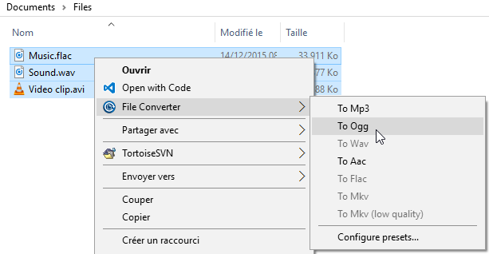

Description
File Converter is a very simple tool which allows you to convert one or several file(s) using the context menu in windows explorer.
It supports a lot of different file formats:
| From | To | |
|---|---|---|
| Audio | 3gp, aiff, ape, avi, bik, cda, flac, flv, m4a, mkv, mov, mp3, mp4, ogg, wav, webm, wma, wmv | flac, aac, ogg, mp3, wav |
| Video | 3gp, avi, bik, flv, mkv, mov, webm, wmv | mkv, avi |
| Image | bmp, ico, jpg, jpeg, png, tiff | png, jpg, ico |
The interface is designed to be as light as possible to keep the application pleasant to use.

You can heavily customize the application to add / remove conversion presets in the files context menus or edit the existing one to change the conversion options.

If you want more informations about the features offered in File Converter, visit the documentation page.
I hope this application will help you :)
It is open source (GLP v3), free and without any adds so you just have to enjoy it!
Downloads
Windows 64 bits installer: FileConverter-0.5-x64-setup.msi (~16 Mo)
Sources (C#/WPF project): FileConverter-v0.5.tar.gz (~11 Mo)